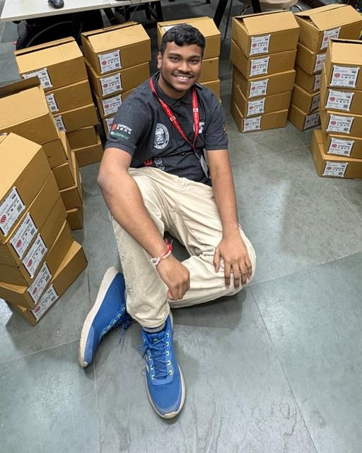
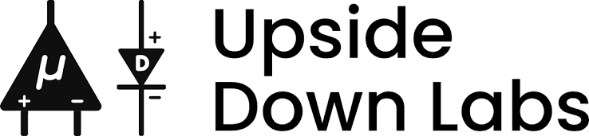

Analog electronics · RF design · Biosignals · Embedded hardware
Varun Adinath Patil
Enjoy tinkering with hardware
Electronics and Telecommunication Engineering student at VJTI, Mumbai. At Upside Down Labs I worked on biosignal acquisition and human–computer interfaces; at SRA VJTI I lead electronics projects and mentor students.

01
Experience
Embedded Hardware Intern · Upside Down Labs
Delhi, India · March–August 2026
Worked on analog design and validation for biosignal hardware, including an automated NPG Lite test jig to check board connections, BioAmplifier operation, and analog signal integrity. The projects below put that signal chain to work.

Analog biosignal projects at Upside Down Labs
EOG and EMG acquisition · NPG Lite
Hands-free biosignal mouse
Built a wireless mouse around NPG Lite’s analog BioAmp. Electrodes pick up small eye (EOG) and jaw-muscle (EMG) voltages; the BioAmp conditions those signals for ADC sampling. Blink and jaw-clench gestures become mouse actions, while an IMU tracks head movement and BLE sends the controls to a computer.
Built a two-player game using two Muscle BioAmp Patchy analog front ends. Each amplifies forearm EMG by ×2420 and band-pass filters it from 72–720 Hz before an Arduino samples the signal. Comparing the two channels moves a servo claw; a browser dashboard displays the live waveforms.
Lead electronics work for robotics projects and mentor students in electronics through ESP32 workshops, PCB assembly, soldering, and board debugging. Designed Wall-E as a shared platform for learning sensors, motor control, and embedded firmware.
02
Projects
Wearable PCB · RF design · ESP32-PICO-D4
Smart Watch
Designed the RF section of a compact smartwatch PCB around two SMD antennas: one for the ESP32 wireless connection and a separate antenna for GNSS. Focused on RF layout, antenna placement, feed routing, and impedance matching to support reliable wireless performance within the circular board. The project also brought analog and mixed-signal design together with the watch’s sensing and embedded electronics.
Fig. 3 — Smartwatch PCB render showing the two SMD antenna locations and compact circular layout.
Source
repository.
Development board · SRA VJTI
Wall-E
An ESP32 board for robotics workshops, used by more than 300 students. It brings I²C sensors, motor and servo connections, and protected 12 V → 5 V → 3.3 V power onto one board.
An ESP32 receives firmware over the air and transfers it to an STM32 over UART. The bootloader checks the image with CRC32 and can select between two firmware slots.
A line-following robot with PID steering, turn logic, and object detection. A local web interface exposes sensor readings and PID values during tuning.
A rover and base-station prototype built at Hardware Hackathon 2.0. The team combined sensors, motor control, ESP-NOW communication, and a local SoftAP for monitoring.